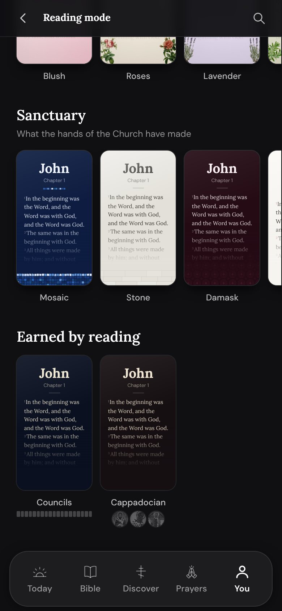
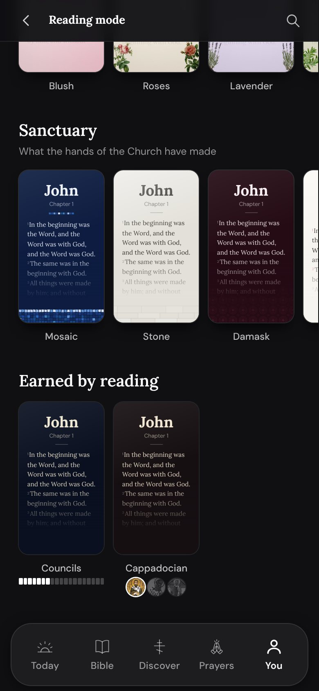
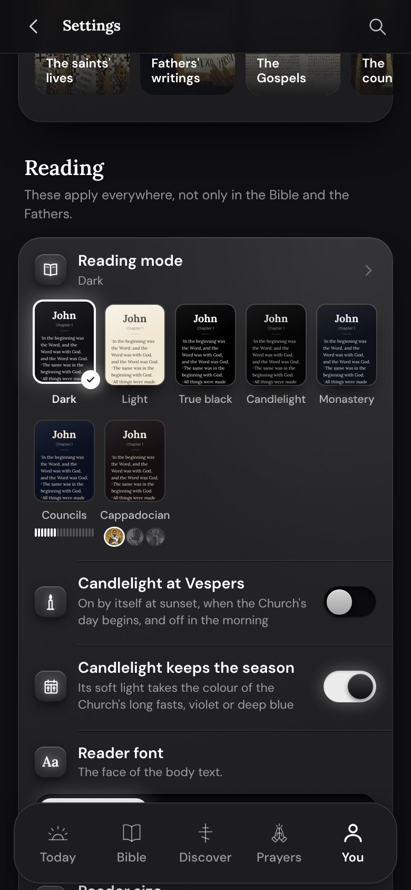
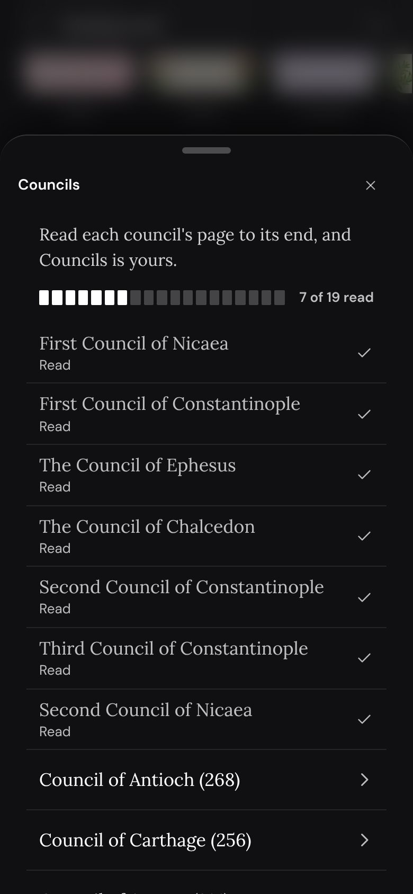
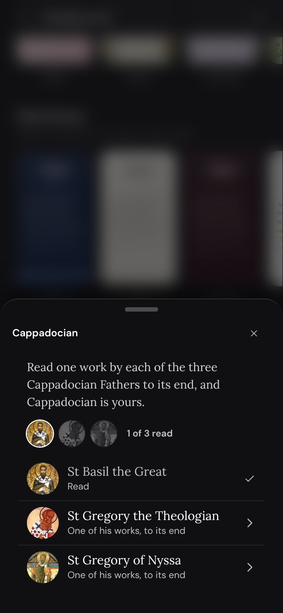
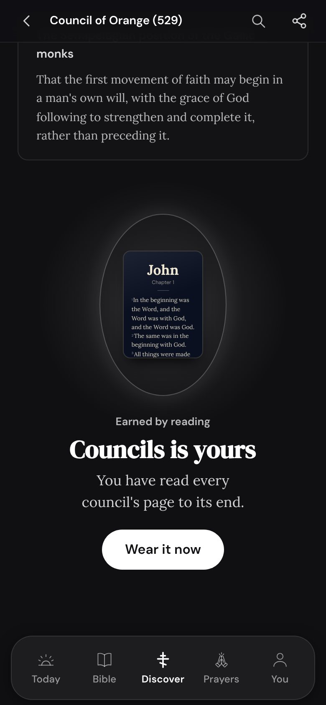
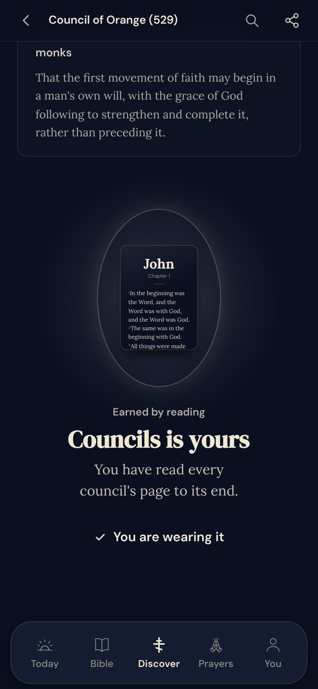
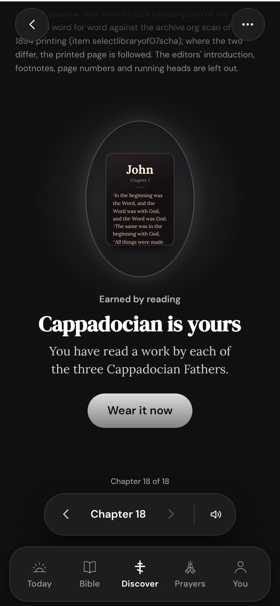

13 November 2026. Every still is the app's own export on a phone, 390 wide.
What it was
Two looks are earned by reading: Councils, for reading every council's page to its end, and Cappadocian, for reading one work by each of the three Cappadocian Fathers. Until now a reader saw a dimmed card with "0 of 19" under it, one long sentence when they tapped it, and nothing at all at the moment they earned it.
Three things changed, and nothing else. The card shows the look and the progress as what it is. A tap opens what is left to read, each a door to it. And the moment it is earned is a moment.
The card

A new reader

Part way
The look itself, lit as it will be
It was drawn dim, which said only that something was missing. Now a reader sees what they are reading towards, in the look's own colours, beside every other card.
Nineteen marks for the councils
One mark for one council. A reader sees at a glance how many are left and that each is a small thing, where "7 of 19" is a sum to work out.
Three faces for the three Fathers
Each Father's own icon, grey until a work of his is read and then lit. The goal is three men, not a number, and the reader meets them before they read them.
The count is still said
A screen reader hears "7 of 19" off the marks, so nothing is lost for a reader who cannot see them.

The same two cards in Settings' Reading row.
The way to earn it

Councils

Cappadocian
A tap opens what is left, not a sentence about it
The old line told a reader what to do and left them in Settings. Each row here is the council or the Father himself, and a tap starts the reading.
What is read keeps its place, with a check
A list that drops what is done hides the work already behind the reader. Nineteen rows that fill with checks is the thing itself.
The house sheet, and the house's rows
It is the same sheet the Bible's chapters and the saints' works open in, so nothing new has to be learned.
Plus is said here, to a reader without it
Before they read nineteen pages for it. The line is the app's own, unchanged.
The moment it is earned
The last council read to its end, in the app's own motion. Eight seconds, no sound.

Councils, at the page's foot

One tap later

Cappadocian, at the foot of the last work read.
In the page, under the reader's last words
They have just finished reading. Nothing takes the page from them, and nothing has to be dismissed.
The house's own reveal
The gift box's language: a soft pool of light the page rises into, a mandorla it rests in, a few embers. No rays, no sparkle, no confetti.
The look itself in the light
What is revealed is the thing earned, drawn by the same small page the picker uses, so the reward is seen and not described.
One soft tick, as it settles
The phone's lightest tap, the app's own, at 700ms. A finished rule is not a fanfare.
One tap to wear it
The one thing a reader wants next. After the tap the page is in the look and the button says so.
Once, on the page that earned it
The device remembers it was shown. Coming back to the same page is reading, not a repeat.
Still under reduced motion
Nothing travels: it is whole at once, and the embers are not drawn.
What was measured
Not proven
Nothing has been seen on a real phone, and the clip is Android's engine, so the haptic and an iPhone are first felt by you. Updates 11 is making the picker one sideways row: these cards are drawn to go into that row, and the arbiter has the spec. Settings' own words for these two are Updates 11's, by note 19.
Your answer
Held until your word
Yes or no
Yes ships the card, the sheet and the moment in 1.9. No leaves the two looks as they are today.